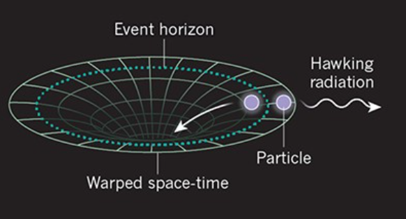
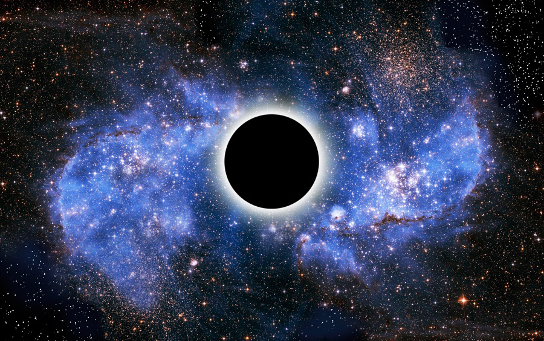

One of the most infamous problems in modern astrophysics.
What are Black Holes?
Black holes are regions where spacetime becomes so distorted that nothing can escape its gravitational influence. They are created from the death of extremely massive stars (core greater than 3 solar masses) that collapse under their own gravity at the end of their life. Inside a black hole is a singularity, a point of extreme gravity, that is surrounded by the event horizon, the point at which nothing can escape the gravitational pull of the black hole. Black holes cannot be observed directly since they emit no light. Instead, astronomers have detected their existence through their gravitational influence on other cosmic bodies.
How are black holes created?
Black holes are generally created from the collapse of massive stars (at least 8-10 solar masses). This process is known as gravitational collapse. Normally, a star's outward pressure balances with the inward gravity of its core. However, if the star no longer has enough "fuel" for nucleosynthesis (the process of fusing elements to produce energy), the pressure will become too low to resist the star's gravity. Eventually, this causes it to collapse in on itself into a singularity.
Hawking Radiation
Hawking Radiation is theoretical radiation released just outside of a black hole’s event horizon. It is caused by the disturbance in the matter and antimatter fields. Antimatter is matter consisting of the "antiparticles" of matter particles. An antimatter particle has the opposite charge of an ordinary particle. For example, the antimatter particle corresponding to the electron would be the "positron", which has a positive charge. Due to the extreme gravity of a black hole, the antimatter and matter fields are disturbed. This causing matter and antimatter particles spontaneously appear into existence outside the event horizon and draw energy from the black hole in pairs known as "virtual pairs". These are created due quantum fluctuations. While they do not release any energy themselves, when one particle falls into the black hole its counterpart is often able to escape. As a result, small amounts of atypical thermal energy is able to escape and leak out from black holes in the form of radiation. Hawking Radiation reduces the black hole’s mass and rotational energy. Therefore, black holes can theoretically evaporate if they do not gain sufficient mass. However, since Hawking Radiation is different from thermal energy, it only contains quantum information about the black hole’s mass, angular momentum, and charge (assuming that black holes inherently have no other properties).

The Black Hole Information Paradox
The Black Hole Information Paradox arises from a fundamental disagreement between two of the most successful theories of physics: General Relativity and Quantum Mechanics. Since Hawking Radiation is different from typical thermal energy, it only contains quantum information about the black hole's mass, angular momentum, and charge (assuming that black holes inherently have no other properties). According to quantum mechanics, all quantum information (information about the state of a quantum system) is conserved and cannot be created nor destroyed. However, Hawking Radiation and General Relativity posit that information, about the star the black hole formed from and any objects that passed its event horizon, can be lost through the radiation. This contradiction shines light on the fundamental issues with both theories when it comes to describing realms of extremeties, such as the extreme gravity of black holes. As a result, the Black Hole Information Paradox is at the forefront of modern day astrophysics with many researchers hoping to use it to develop a successful theory of quantum gravity, a unification of General Relativity and Quantum Mechanics.

Potential Solutions
The String Theory Approach
Originally, it was believed that Hawking Radiation was a form of atypical thermal radiation. String theorists propose that it is actually more different from thermal radiation than previously believed. In this approach, Hawking Radiation receives quantum correlations that encode information about the interior of the black hole. This ensures that no quantum information is lost.AdS/CFT dualityThe Ads/CFT duality is a strategy employed by astrophysicists in which a scenario is viewed both with and without gravity as part of it. One way it can be employed to "resolve" the Black Hole Information Paradox is by viewing the black hole as a three-dimensional space enclosed within a two-dimensional boundary. Then, all objects that fall into the black hole leave an "imprint" on the event horizon, ensuring that information is conserved. This principle is, more generally, known as the Holographic Principle of black holes.Other ViewsStill, some argue that the Black Hole Information Paradox will never be solved and that it is a waste of time pursuing it in astrophysics. In their view, the paradox can never truly be resolved until a theory encompassing both quantum mechanics and general relativity is developed. Likewise, any potential solution can never be confirmed due to our inability to make close observations of black holes and the impossibility of ever observing their singularities. Therefore, unless a "solution" of the theory can produce other unique predictions that we can confirm with our technology, the paradox may never be resolved.